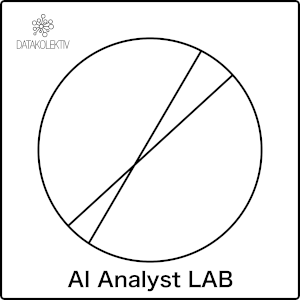

AI ANALYST LAB¶

A Hands-on Course on AI for Data Analysts¶
Session 02: Risk assessment with probability¶
Feedback should be sent to goran.milovanovic@datakolektiv.com.
This notebook accompanies the AI Analyst LAB course. Welcome to Session 02 — your first proper week of probability.
What we will do today¶
Last week (Session 01) we asked "what does typical demand look like, and how confident are we in that number?" and answered it with descriptive statistics, the Central Limit Theorem, and the standard error. This week we ask a different kind of question — "when is the risk of a bad outcome higher?" — and the right tool for that is probability.
We will not race into formulas. We will take the long road on purpose. First we will use probability informally — as a long-run frequency that everyone already understands. Then we will translate that informal intuition into a small number of formal pieces of mathematics, one at a time. Finally, near the end of the notebook, we will write down the Kolmogorov axioms — the three short statements that everything we have done in this notebook quietly rests on.
The sections, in order:
| Section | What happens |
|---|---|
| 2.1 | The business case — what you are being asked to deliver this week |
| 2.2 | Meet your Session 02 Tutor (Claude Project) |
| 2.3 | Setup — imports and loading the STATS19 road-safety data |
| 2.4 | First look — what is actually in the file? |
| 2.5 | Probability as intuition — where the idea comes from |
| 2.6 | Translating intuition into math, one concept at a time |
| 2.7 | The Kolmogorov axioms — the foundation everything rests on |
| 2.8 | From axioms to STATS19 — computing real risk numbers |
| 2.9 | Visualizing conditional risk |
| 2.10 | Expected value — turning probability into a decision tool |
| 2.11 | Bootstrap — uncertainty around our risk numbers |
| 2.12 | Data limitations — what STATS19 includes and systematically misses |
| 2.13 | Our Claude API calls — a structured risk-brief outline |
| 2.14 | The risk brief — a fully worked example |
| 2.15 | References — what to study to deepen this session |
A few rules for using this notebook, just like in Session 01:
- Run the cells in order. Each section builds on the one before.
- Read the explanations, do not just run the cells. The math is here to be understood, not skipped.
- Every line of code has a comment above it explaining what it does in beginner language.
- Use your Session 02 Tutor (the Claude Project at
_tutors/session02_tutor.xml) when something feels confusing. - Compute first in Python, then use the model to interpret. Same rule as Session 01 — we never let an LLM invent numbers.
2.1 The business case¶
You have just moved from CityCycle to RoadSafe Analytics — a small consultancy that helps UK city councils make road-safety decisions. It is your first week on the new assignment. Your manager hands you a CSV from the UK Department for Transport and a brief:
"Leadership at the council wants a one-page risk brief by Friday. They want to know: when is the risk of severe road collisions higher? We have a tight budget for enforcement and infrastructure, and we need to spend it where it actually matters. Tell us where to focus, and — please — tell us what you do not know yet, too."
This is a recurring shape of analyst work: a stakeholder cares about risk under conditions — "given that it is raining, given that the road is rural, given that it is a Friday night, how likely is a severe outcome?" — and you turn raw event data into honest answers.
By the end of this session you will have:
- Loaded the official STATS19 road-safety data into Python and sanity-checked it.
- Built intuition for what probability is — before any formula appears.
- Defined formally what we mean by an event, a probability function, marginal probability, conditional probability, independence, and the expected value — one concept at a time, with a tiny example for each.
- Met the Kolmogorov axioms — the three short statements that everything else in probability is built from.
- Computed real conditional risk numbers from the STATS19 data.
- Quantified the uncertainty in those numbers using the bootstrap — a method that, as we will see, is the same idea as the CLT simulation from §1.9 but works without the CLT's assumptions.
- Made our second-ever Claude API call — this time asking the model to outline a risk brief as a structured JSON document, and to translate computed numbers into a stakeholder paragraph.
- Delivered the risk brief, with explicit recommendations and an honest "what we do not know yet" section.
Two threads weave through this notebook, the same way last week's notebook had two threads:
- How do we quantify risk under conditions? — sections 2.5 through 2.10.
- How honest can we be about uncertainty in police-reported data? — sections 2.11 and 2.12.
The risk brief in section 2.14 brings both threads together. Let's get started.
2.2 Meet your Session 02 Tutor (Claude Project)¶
Before you continue, you should have set up your Session 02 Tutor — a new Claude Project configured specifically to teach you the probability ideas behind this notebook in a gentle, beginner-friendly way.
If you have not done this yet, open _tutors/TutorProjectCreation.md and follow the step-by-step instructions, using the file _tutors/session02_tutor.xml as the project's instructions. It takes about five minutes. Come back here when you are done.
The tutor knows that you have just finished Session 01 and that you are working on the STATS19 risk brief this week. It will make Session 01 callbacks when they help. It is also aware of its two siblings: it will redirect Python questions to your python_stack_tutor Project and PowerShell questions to windows_powershell_tutor.
Some example questions you might paste into the tutor as you work through this notebook:
- "What is the difference between marginal probability and conditional probability, in plain English?"
- "My notebook says
P(severe | rural)— what does the bar in the middle of that mean again?" - "Why do textbooks always say 'mutually exclusive' and 'independent' are different things? I keep mixing them up."
- "I have these bootstrap percentiles — what is the right way to phrase this in the risk brief?"
Keep the tutor open in a second browser tab as you work.
2.3 Setup — imports and loading the data¶
Same opening move as Session 01: import the tools, load the data, confirm the load worked.
Callback to §1.3. In Session 01 we used four libraries —
pandas,numpy,matplotlib.pyplot,seaborn. Same four this week. If you need a refresher on what each one does, scroll back to Session 01 §1.3, or ask yourpython_stack_tutor. The aliases are unchanged:pd,np,plt,sns.
# Import pandas under the alias pd; pandas gives us the DataFrame (tables of data).
import pandas as pd
# Import numpy under the alias np; we will use it heavily today for random sampling (bootstrap) and arithmetic.
import numpy as np
# Import matplotlib's plotting module under the alias plt; this is our foundational plotting library.
import matplotlib.pyplot as plt
# Import seaborn under the alias sns; we will use it for the conditional-risk heatmap in section 2.9.
import seaborn as sns
# Markdown and display let us render rich Markdown output directly in the notebook.
from IPython.display import Markdown, display
# Jupyter magic that tells the notebook to display plots inline (directly in the notebook).
%matplotlib inline
# Cosmetic: set seaborn's clean default style for our plots.
sns.set_theme(style="whitegrid")
# Print a confirmation so we know the imports succeeded.
print("Libraries imported successfully.")
Libraries imported successfully.
The STATS19 dataset¶
This week's dataset is the Great Britain STATS19 road safety open data for 2024, published by the UK Department for Transport under the Open Government Licence v3.0 (we comply with that licence by attributing it in _data/ATTRIBUTION.md). It is a record-level dataset of personal-injury road collisions reported to the police in Great Britain.
Three files come with this dataset:
dft-road-casualty-statistics-collision-2024.csv— the main collisions table, one row per collision (where it happened, when, conditions, severity).dft-road-casualty-statistics-casualty-2024.csv— one row per casualty (their age, sex, injury type).dft-road-casualty-statistics-vehicle-2024.csv— one row per vehicle involved.
For Session 02 we will work only with the collisions table. It already contains everything we need to talk about risk per collision. The other two are good follow-ups for a later session.
Loading the collisions file¶
Path conventions in this course (same as Session 01):
- This notebook lives at
AI_AnalystLAB/Session02/AI_AnalystLAB02.ipynb. - The data lives at
AI_AnalystLAB/_data/stats19_road_safety/…. - So from the notebook's location we go up one folder (
..= repo root) and then into_data/stats19_road_safety/.
Notice the
low_memory=Falseargument below.pandasreads big CSV files in chunks by default to save memory, and sometimes that causes it to mix types within a single column. Passinglow_memory=Falsetellspandasto read the whole file at once and figure out each column's type cleanly. The file is small enough (~19 MB) that this is fine.
# Read the collision CSV into a pandas DataFrame; low_memory=False reads the file in one pass for clean type inference.
df = pd.read_csv(
"../_data/stats19_road_safety/dft-road-casualty-statistics-collision-2024.csv",
low_memory=False
)
# Confirm the type of df is DataFrame and report how many rows we loaded.
print("Type of df:", type(df).__name__)
print("Rows loaded:", len(df))
Type of df: DataFrame Rows loaded: 100927
Expected output. You should see:
Type of df: DataFrame
Rows loaded: 100927
About 101 thousand collisions were reported to police in Great Britain in 2024. That is a substantial sample — large enough that the conditional probabilities we will compute will be reasonably precise (we will quantify how precise in §2.11 using the bootstrap).
Mini-recap of §2.3. Same four libraries as Session 01, new dataset, loaded into a DataFrame named
df. Every operation that follows is ondf.
# Show how many rows and columns the dataset has.
df.shape
(100927, 44)
You should see (100927, 44) — 100,927 collisions, 44 columns each. STATS19 records a lot of metadata for every collision (location, vehicles, junction details, weather, road conditions, severity, etc.).
Check 2 — head¶
# Peek at the first 5 rows.
df.head()
| collision_index | collision_year | collision_ref_no | location_easting_osgr | location_northing_osgr | longitude | latitude | police_force | collision_severity | number_of_vehicles | ... | carriageway_hazards_historic | carriageway_hazards | urban_or_rural_area | did_police_officer_attend_scene_of_accident | trunk_road_flag | lsoa_of_accident_location | enhanced_severity_collision | collision_injury_based | collision_adjusted_severity_serious | collision_adjusted_severity_slight | |
|---|---|---|---|---|---|---|---|---|---|---|---|---|---|---|---|---|---|---|---|---|---|
| 0 | 202417M119024 | 2024 | 17M119024 | 450057 | 519938 | -1.22722 | 54.57219 | 17 | 3 | 2 | ... | -1 | 0 | 1 | 3 | 2 | E01035190 | 3 | 1 | 0.000000 | 1.000000 |
| 1 | 202417S312124 | 2024 | 17S312124 | 445858 | 516830 | -1.29265 | 54.54466 | 17 | 3 | 1 | ... | -1 | 0 | 1 | 3 | 2 | E01012239 | 3 | 1 | 0.000000 | 1.000000 |
| 2 | 2024070110901 | 2024 | 070110901 | 364765 | 390979 | -2.53157 | 53.41443 | 7 | 3 | 2 | ... | 0 | 0 | 2 | 2 | 2 | E01012459 | -1 | 0 | 0.014743 | 0.985257 |
| 3 | 2024041446676 | 2024 | 041446676 | 365989 | 419804 | -2.51630 | 53.67359 | 4 | 2 | 1 | ... | -1 | 0 | 2 | 1 | 2 | E01012628 | 6 | 1 | 1.000000 | 0.000000 |
| 4 | 2024041478641 | 2024 | 041478641 | 366864 | 430071 | -2.50416 | 53.76592 | 4 | 2 | 2 | ... | -1 | 0 | 1 | 1 | 2 | E01012581 | 7 | 1 | 1.000000 | 0.000000 |
5 rows × 44 columns
You will see 5 rows, each one a single police-reported collision. Many of the columns are numeric codes — for example, collision_severity = 3 means "Slight", and weather_conditions = 1 means "Fine". STATS19 stores categorical information as integer codes for compactness. We will translate the codes we care about into plain English in a moment.
Check 3 — dtypes¶
# Show the type of each column.
df.dtypes
collision_index str collision_year int64 collision_ref_no str location_easting_osgr int64 location_northing_osgr int64 longitude float64 latitude float64 police_force int64 collision_severity int64 number_of_vehicles int64 number_of_casualties int64 date str day_of_week int64 time str local_authority_district int64 local_authority_ons_district str local_authority_highway str local_authority_highway_current str first_road_class int64 first_road_number int64 road_type int64 speed_limit int64 junction_detail_historic int64 junction_detail int64 junction_control int64 second_road_class int64 second_road_number int64 pedestrian_crossing_human_control_historic int64 pedestrian_crossing_physical_facilities_historic int64 pedestrian_crossing int64 light_conditions int64 weather_conditions int64 road_surface_conditions int64 special_conditions_at_site int64 carriageway_hazards_historic int64 carriageway_hazards int64 urban_or_rural_area int64 did_police_officer_attend_scene_of_accident int64 trunk_road_flag int64 lsoa_of_accident_location str enhanced_severity_collision int64 collision_injury_based int64 collision_adjusted_severity_serious float64 collision_adjusted_severity_slight float64 dtype: object
Most columns are int64 (whole numbers, used for codes and counts). A few are float64 (decimals, used for latitude / longitude and for two of the "adjusted severity" columns) or object (text, used for date, time, and a few identifiers).
Check 4 — missing values¶
# Count missing values per column and show only the columns that actually have missing data.
missing = df.isna().sum()
missing[missing > 0]
local_authority_highway_current 3 dtype: int64
Only one column — local_authority_highway_current — has any missing values, and it is missing in only 3 of 100,927 rows. The dataset is essentially complete. Real-world data is rarely this clean; the Department for Transport has done careful work on this file.
One small caveat: STATS19 uses
-1as a sentinel for "not recorded" in several integer-coded columns (e.g.,light_conditions,road_surface_conditions). These are not Python'sNaN(which is why.isna()did not flag them), but they are still missing information in a meaningful sense. We will treat-1values explicitly when they matter.
The columns we will actually use¶
STATS19 has 44 columns. For a risk brief about severity, only a handful matter. Here are the ones we will refer to throughout this notebook, with their codes spelled out in plain English.
| Column | What it is | The codes we will use |
|---|---|---|
collision_severity |
How serious was the collision? | 1 = Fatal, 2 = Serious, 3 = Slight. We will define severe = Fatal or Serious (codes 1 or 2). |
light_conditions |
What were the lighting conditions? | 1 = Daylight; 4 = Darkness, lights lit; 5 = Darkness, lights unlit; 6 = Darkness, no lighting; 7 = Darkness, lighting unknown; -1 = not recorded. |
weather_conditions |
What was the weather like? | 1 = Fine, 2 = Raining, 3 = Snowing, 4–6 = various with high winds, 7 = Fog/mist, 8 = Other, 9 = Unknown. |
road_surface_conditions |
What was the road surface like? | 1 = Dry, 2 = Wet/damp, 3 = Snow, 4 = Frost/ice, 5 = Flood, 9 = Unknown, -1 = not recorded. |
urban_or_rural_area |
Urban or rural location? | 1 = Urban, 2 = Rural, 3 = Unallocated. |
speed_limit |
Posted speed limit at the collision location (mph). | 20, 30, 40, 50, 60, 70 (mph). |
day_of_week |
What day of the week? | 1 = Sunday, 2 = Monday, …, 7 = Saturday. |
That is the full vocabulary we need for §2.8 onward. Everything else in the table is interesting but not on our path this week.
Mini-recap of §2.4. 100,927 collisions, 44 columns, essentially no missing values, and we now know exactly which seven columns matter for the risk brief. Ready to talk about probability.
2.5 Probability as intuition¶
We are about to introduce a small amount of formal mathematics. Before we do, we will spend a few minutes building up the intuition that the math will eventually pin down. You almost certainly already think correctly about probability in everyday life — the goal of this section is to convince you of that, and to name the intuitions you already have.
What does "probability" mean to a normal human being?¶
When the weather forecast says "60% chance of rain tomorrow", you have no trouble interpreting that. You take an umbrella, just in case. You do not need a definition of probability to behave reasonably.
The most useful informal definition of probability is the long-run frequency interpretation:
"If we repeated this situation many, many times under similar conditions, what fraction of the time would the outcome happen?"
A few examples to make this concrete:
"This fair coin has probability $1/2$ of landing heads." Flip it 1,000 times; about 500 of the flips will be heads. Flip it 10,000 times; about 5,000 will be heads. The fraction of heads gets closer and closer to $1/2$ as you flip more — that fraction is the probability.
"A standard six-sided die rolls a 6 with probability $1/6$." Roll it 6,000 times; about 1,000 of the rolls will be 6s.
"The probability of rain in this city in March is 30%." Over the last fifty Marches, it rained on about 30% of the days.
"In Great Britain in 2024, the probability that a police-reported collision was severe was about 25%." In our dataset, about 25,000 out of 101,000 reported collisions were Fatal or Serious. We will compute exactly this in section 2.6.3.
Three things to remember from this informal view¶
Probabilities are numbers between $0$ and $1$. They are fractions of "all the times this could have happened". $0$ means "never", $1$ means "always", in-between values mean "some of the time".
Probability needs a denominator. "How likely is it that a collision is severe?" is not a question until you say "out of what?". Out of all collisions? Out of collisions on Tuesdays? Out of collisions in rural areas? Each of these gives a different number, and the denominator is half the answer. Whenever you read a probability number, ask yourself "out of what?" — that is the most useful single habit in probability.
Probability is about repeatable conditions. The long-run-frequency interpretation makes sense for situations we could (in principle) repeat: rolling a die, recording collisions year after year, asking visitors whether they converted. It is more philosophically slippery for one-off events like "the probability that this specific person will be president next year", but you do not need to worry about that in this course. Every probability we compute in Session 02 will be a fraction of something repeatable.
Where intuition can mislead¶
Three classic traps to watch for — calling them out now so we can avoid them later.
The gambler's fallacy. "Black has come up five times in a row at the roulette wheel, so red is now overdue." False. The wheel has no memory. Each spin is independent of every previous spin — see §2.6.6 for what "independent" means precisely.
Base-rate neglect. "The medical test is 99% accurate, so if it comes back positive I almost certainly have the disease." Often false. If the disease itself is very rare (low base rate), even a 99%-accurate test can produce more false positives than true positives. The intuition fixes itself once you actually compute the conditional probability — see §2.6.7.
Ignoring the denominator. "500 collisions happened in rural areas last year — rural roads are clearly more dangerous." Not necessarily. If only 5,000 vehicles travel rural roads while 50,000 travel urban ones, the rural rate might be much higher even though urban areas have more collisions overall. Always ask: "out of what?"
Callback — you have already used probability in Session 01¶
In §1.7 of last week's notebook we wrote things like $P(X = k)$ when we introduced the Binomial and Poisson distributions. We used probability informally there to say "the probability that the random variable $X$ takes the value $k$". We never wrote down what $P$ actually was — we just trusted the intuition. This week we make that machinery precise.
Mini-recap of §2.5. Probability is a number between $0$ and $1$ representing the long-run fraction of times an outcome would occur if we could repeat the situation many times under similar conditions. It always has a denominator — "out of what?" — and three classic intuition traps are the gambler's fallacy, base-rate neglect, and ignoring the denominator. We have already used the notation $P(\cdot)$ informally in Session 01; we are now going to give it a precise meaning.
2.6 Translating intuition into math, one concept at a time¶
This whole section is just one move: take each informal idea we just discussed, and give it a precise mathematical form. We will introduce one piece of vocabulary at a time, with a tiny example for each. No formula appears without its symbols being named.
We will need seven pieces:
- 2.6.1 Sample space and events.
- 2.6.2 The probability function.
- 2.6.3 Marginal probability — and its data-based estimator.
- 2.6.4 Conditional probability.
- 2.6.5 Joint probability and the product rule.
- 2.6.6 Independence.
- 2.6.7 Bayes' theorem — derived from the pieces above in two lines.
2.6.1 Sample space and events¶
Whenever we talk about probability, we need a clear answer to "what kind of thing are we taking the probability of?"
Intuition¶
Imagine the simplest thing: rolling one six-sided die. There are six possible outcomes — $1, 2, 3, 4, 5, 6$. The set of all possible outcomes is the sample space.
Once we have the sample space, we can talk about events — collections of outcomes we care about. "The roll is even" is an event (the outcomes $\{2, 4, 6\}$). "The roll is at least 5" is an event (the outcomes $\{5, 6\}$).
Formal definition¶
- The sample space, written $\Omega$ (Greek capital omega, pronounced "omega"), is the set of all possible outcomes of the experiment.
- An individual outcome is written $\omega \in \Omega$ (Greek lowercase omega).
- An event $A$ is a subset of the sample space: $A \subseteq \Omega$. An event is just "some of the outcomes".
Set operations on events are exactly the same as on any sets:
- $A \cup B$ ("$A$ union $B$") — outcomes in $A$ or $B$ or both.
- $A \cap B$ ("$A$ intersect $B$") — outcomes in both $A$ and $B$.
- $A^c$ ("$A$ complement") — outcomes not in $A$.
- $\emptyset$ ("the empty set") — no outcomes; the impossible event.
- $\Omega$ itself — every outcome; the certain event.
Tiny example — one fair die¶
- Sample space: $\Omega = \{1, 2, 3, 4, 5, 6\}$.
- Event "even": $A = \{2, 4, 6\}$.
- Event "at least 5": $B = \{5, 6\}$.
- $A \cup B = \{2, 4, 5, 6\}$ — "even or at least 5".
- $A \cap B = \{6\}$ — "even and at least 5" — only the number 6.
- $A^c = \{1, 3, 5\}$ — "not even" (i.e., odd).
The STATS19 example we will use throughout¶
For our risk-brief work:
- $\Omega$ = the set of all police-reported personal-injury collisions in Great Britain in 2024. There are 100,927 of them in our DataFrame — one per row.
- The event $S$ = "the collision was severe" (Fatal or Serious) is the subset of those 100,927 rows where
collision_severityis 1 or 2. - The event $R$ = "the collision was in a rural area" is the subset where
urban_or_rural_areais 2. - $S \cap R$ = severe collisions in rural areas.
- $S^c$ = non-severe (Slight) collisions.
A row of our DataFrame is an outcome $\omega$. An event is the set of rows satisfying some condition. Boolean masks in pandas (df['col'] == value, df['col'].isin(...)) are exactly how we express events on real data.
2.6.2 The probability function¶
Intuition¶
The probability function is the rule that assigns a number — the probability — to each event. It is the formal object behind every sentence of the form "the probability of A is 0.3".
Formal definition¶
The probability function is a function
$$P : \mathcal{F} \to [0, 1]$$
that takes an event $A$ (a subset of the sample space) and returns a real number $P(A)$ between $0$ and $1$. Read it as "P of A".
Symbols, one at a time:
- $P$ — the probability function (a function, not a number).
- $\mathcal{F}$ ("script F") — the collection of events we are allowed to ask about. For the purposes of this course, $\mathcal{F}$ is "every reasonable event", and we will not worry about which sets are technically allowed (that is what measure theory worries about, and we do not need it).
- $[0, 1]$ — the closed interval from 0 to 1; the set of possible probability values.
Callback to §1.7. In Session 01 we wrote $P(X = k)$ when we talked about the Binomial and Poisson distributions. The thing we called $P$ there is exactly this $P$. The expression $X = k$ is an event — the set of outcomes in which the random variable $X$ takes the value $k$. So "the probability mass function of $X$" is just the probability function $P$ evaluated on the events of the form $\{X = k\}$ for each possible value $k$.
Two perspectives on the same $P$¶
It is worth being clear about two different things $P$ can refer to:
- $P$ as the truth — the probability function for the actual underlying process (the population). For STATS19 in 2024, we can take $P$ to be the function that assigns to each subset of all 100,927 collisions its actual fraction.
- $\hat{P}$ as an estimate from data (read "P-hat") — what we get when we compute a fraction from a sample. The hat is the convention for "estimated from data" (we used the same hat in §1.10's $\widehat{\text{SE}}$).
For this notebook, because we have the entire DataFrame and we are defining our population to be those 100,927 collisions, $P$ and $\hat{P}$ are the same. When we later think of the dataset as a sample from a larger ongoing process (Great Britain's road network), the distinction matters — and the bootstrap in §2.11 is how we measure the gap.
2.6.3 Marginal probability — and its data estimator¶
Intuition¶
The marginal probability of an event is just "how often does the event happen, out of all possible outcomes?". It is the simplest, most overall version of the probability of a thing.
Formal¶
For an event $A \subseteq \Omega$, the marginal probability of $A$ is just $P(A)$ — the value of the probability function on $A$.
When we estimate $P(A)$ from a dataset of $n$ outcomes, the natural estimator is the fraction of outcomes that fall in $A$:
$$\hat{P}(A) \;=\; \frac{\text{number of outcomes in } A}{n}$$
Reading it: $\hat{P}(A)$ is what you get by counting how many rows satisfy the condition for $A$ and dividing by the total number of rows.
A tiny example — one fair die again¶
Event $A$ = "the roll is even". Then $A = \{2, 4, 6\}$, the sample space has 6 equally likely outcomes, so $P(A) = 3 / 6 = 1/2$. If you rolled the die 1,000 times and counted, you would expect about 500 even rolls — and $500 / 1{,}000 = 0.5 = \hat{P}(A)$ from that experiment, which would be very close to the true $P(A)$.
Let's compute it on STATS19¶
We define our key event of the session:
Event $S$ = "the collision was severe", where severe means
collision_severityis either 1 (Fatal) or 2 (Serious).
Then we compute $\hat{P}(S)$ from the data.
# Build a boolean Series that is True for severe collisions (Fatal or Serious) and False for Slight.
severe = df['collision_severity'].isin([1, 2])
# The fraction of True values in the boolean Series is exactly P-hat(severe).
P_severe = severe.mean()
# Also compute the three sub-probabilities so we can see the full breakdown.
P_fatal = (df['collision_severity'] == 1).mean()
P_serious = (df['collision_severity'] == 2).mean()
P_slight = (df['collision_severity'] == 3).mean()
# Print all four with four decimals so we can read percentages directly.
print(f"P(severe) = {P_severe:.4f}")
print(f"P(fatal) = {P_fatal:.4f}")
print(f"P(serious) = {P_serious:.4f}")
print(f"P(slight) = {P_slight:.4f}")
P(severe) = 0.2484 P(fatal) = 0.0149 P(serious) = 0.2335 P(slight) = 0.7516
You should see approximately:
P(severe) = 0.2484
P(fatal) = 0.0149
P(serious) = 0.2335
P(slight) = 0.7516
Reading these numbers: about 1 in 4 police-reported collisions in Great Britain in 2024 was severe — Fatal or Serious. About 1 in 67 was fatal (0.0149 ≈ 1/67).
Two consistency checks the formula forces on us:
- $P(\text{fatal}) + P(\text{serious}) = 0.0149 + 0.2335 = 0.2484 = P(\text{severe})$. ✓ Because "severe" was defined as fatal OR serious, and a collision cannot be both fatal and serious.
- $P(\text{fatal}) + P(\text{serious}) + P(\text{slight}) = 0.0149 + 0.2335 + 0.7516 = 1.0000$. ✓ Because every collision has one of these three severities — they exhaust the sample space.
That second check is just the normalization axiom of probability ($P(\Omega) = 1$) in action, which we will meet formally in §2.7.
2.6.4 Conditional probability¶
This is the single most important concept in this session. Most of the value of probability in business comes from being able to say honestly: "under condition X, the risk of bad outcome Y is …". That is conditional probability.
Intuition¶
The marginal probability $P(S) \approx 0.25$ tells us "about 25% of all reported collisions are severe". But leadership does not want averages over all collisions; they want to know when the risk is higher. "What is the probability of severe given that the collision was in a rural area?" "… given that it was raining?" "… given that the road had a 70 mph limit?"
The bar in $P(A \mid B)$ — read "the probability of $A$ given $B$" — is the formalism for the word "given". It means: "restrict attention to the outcomes where $B$ happens, and within that smaller world, what fraction also have $A$?"
Formal definition¶
For events $A$ and $B$ with $P(B) > 0$:
$$P(A \mid B) \;=\; \frac{P(A \cap B)}{P(B)}$$
Reading every symbol:
- $P(A \mid B)$ — "P of A given B". The bar
|reads as "given". It is not division — it is part of the notation. - $A \cap B$ — "A and B", both events happening together.
- $P(A \cap B)$ — the joint probability of $A$ and $B$.
- The whole right-hand side is a fraction. Numerator: the joint probability. Denominator: the marginal probability of the conditioning event $B$.
In plain English: "to get the probability of $A$ given $B$, take how often both happen and divide by how often $B$ happens."
The condition $P(B) > 0$ matters: you cannot condition on an impossible event. Asking "given that the moon is made of cheese, what is the probability of $A$?" is undefined.
A tiny example — the fair die¶
- $A$ = "the roll is a 6", $P(A) = 1/6$.
- $B$ = "the roll is even", $P(B) = 1/2$.
What is $P(A \mid B)$ — "given the roll is even, what is the probability it is a 6"?
Step by step using the formula:
- $A \cap B$ = "even AND a 6" = $\{6\}$, so $P(A \cap B) = 1/6$.
- $P(B) = 1/2$.
- $P(A \mid B) = (1/6) / (1/2) = 2/6 = 1/3$.
Intuition check: once we know the roll is even, the world of possibilities has shrunk from $\{1,2,3,4,5,6\}$ to $\{2,4,6\}$. Within that smaller world, exactly one outcome out of three is a 6. So $P(A \mid B) = 1/3$. ✓
Computing it on STATS19¶
Now the analyst's bread and butter: how does the probability of a severe collision change when we condition on where it happened?
# Boolean mask for urban collisions (urban_or_rural_area code 1).
urban = df['urban_or_rural_area'] == 1
# Boolean mask for rural collisions (urban_or_rural_area code 2).
rural = df['urban_or_rural_area'] == 2
# Restrict attention to urban collisions, then take the mean of `severe` within them — that is P(severe | urban).
P_severe_urban = severe[urban].mean()
# Same idea for rural.
P_severe_rural = severe[rural].mean()
# Marginal P(severe) for comparison (we computed it before, recomputing for visibility).
P_severe_marginal = severe.mean()
# Print all three.
print(f"P(severe) = {P_severe_marginal:.4f} (marginal — every collision)")
print(f"P(severe | urban) = {P_severe_urban:.4f} (n = {urban.sum():,})")
print(f"P(severe | rural) = {P_severe_rural:.4f} (n = {rural.sum():,})")
print()
print(f"Relative risk (rural / urban) = {P_severe_rural / P_severe_urban:.3f}")
P(severe) = 0.2484 (marginal — every collision) P(severe | urban) = 0.2246 (n = 67,304) P(severe | rural) = 0.2960 (n = 33,620) Relative risk (rural / urban) = 1.317
You should see approximately:
P(severe) = 0.2484 (marginal — every collision)
P(severe | urban) = 0.2246 (n = 67,304)
P(severe | rural) = 0.2960 (n = 33,620)
Relative risk (rural / urban) = 1.318
Reading these numbers: the marginal probability of a severe outcome (24.8%) hides a major split. Rural collisions are about 1.32 times more likely to be severe than urban ones. A rural collision has a roughly 30% chance of being severe; an urban one, roughly 22%.
This is exactly the kind of difference leadership cares about. "Where should we focus enforcement spending?" gets a clearer answer once we look at conditional probabilities rather than the marginal.
Why is rural so much more dangerous? Several plausible reasons — higher speed limits on rural roads, less roadside infrastructure (lighting, barriers), longer ambulance response times, fewer eyewitnesses. The data alone cannot tell us which of these is the driver; what it can tell us is that the difference is real and large. The risk brief will be honest about that.
Mini-recap of §2.6.4. Conditional probability $P(A \mid B)$ is the probability of $A$ within the restricted world where $B$ holds. Formula: $P(A \mid B) = P(A \cap B) / P(B)$. On STATS19, rural collisions are about 32% more likely to be severe than urban ones.
2.6.5 Joint probability and the product rule¶
Intuition¶
The joint probability of two events is the probability they both happen — already met in §2.6.4 as $P(A \cap B)$.
The product rule (also called the multiplication rule) is just the conditional-probability formula rearranged. Rearranging it gives us a useful new way to compute joint probabilities.
Formal — the product rule¶
Starting from the conditional-probability definition $P(A \mid B) = P(A \cap B) / P(B)$, multiply both sides by $P(B)$:
$$P(A \cap B) \;=\; P(B) \, P(A \mid B)$$
By symmetry, conditioning the other way around gives:
$$P(A \cap B) \;=\; P(A) \, P(B \mid A)$$
Both expressions equal $P(A \cap B)$ — and that fact is what makes Bayes' theorem (§2.6.7) work.
Tiny example — dice¶
Roll one die. Let $A$ = "even", $B$ = "at least 5".
- $P(A) = 1/2$, $P(B) = 1/3$ (since $\{5,6\}$ is two of six outcomes).
- $P(A \mid B) = ?$: within $\{5, 6\}$, one is even (the 6), so $P(A \mid B) = 1/2$.
- Product rule: $P(A \cap B) = P(B) \, P(A \mid B) = (1/3) \cdot (1/2) = 1/6$.
Sanity check: $A \cap B$ = "even AND at least 5" = $\{6\}$, and indeed $P(\{6\}) = 1/6$. ✓
Why is this useful in business?¶
Because real data often gives you conditional and marginal probabilities directly, and you need to combine them into joints. For example: "what fraction of all collisions are rural AND severe?" — a joint probability — can be computed either by counting directly, or by the product $P(\text{rural}) \times P(\text{severe} \mid \text{rural})$. Both should give the same answer; if they do not, you have a bug.
Let's verify on STATS19.
# Compute the joint probability P(severe AND rural) by direct counting on the DataFrame.
P_severe_and_rural_direct = (severe & rural).mean()
# Compute the same joint probability via the product rule: P(rural) * P(severe | rural).
P_rural = rural.mean()
P_severe_and_rural_product = P_rural * P_severe_rural
# Print both and confirm they agree.
print(f"P(severe AND rural), direct counting : {P_severe_and_rural_direct:.6f}")
print(f"P(severe AND rural), via product rule : {P_severe_and_rural_product:.6f}")
P(severe AND rural), direct counting : 0.098586 P(severe AND rural), via product rule : 0.098586
You should see both numbers identical (or differ only in the last digit due to floating-point rounding). They must agree — the product rule is not a separate fact, it is just the conditional probability formula written differently. We use it constantly when combining conditional risk numbers with how often each condition occurs.
2.6.6 Independence¶
Intuition¶
Two events are independent when knowing that one happened tells you nothing new about whether the other happened. The classic example: two separate coin flips. The first flip coming up heads gives you zero information about the second flip.
This is not the same as mutually exclusive (cannot both happen). It is a constant source of confusion in introductory probability; we will pin both terms down right now.
Formal — two equivalent definitions¶
Two events $A$ and $B$ are independent if:
$$P(A \cap B) \;=\; P(A) \, P(B)$$
Equivalently (assuming $P(B) > 0$):
$$P(A \mid B) \;=\; P(A)$$
The two forms are equivalent. The first one is easier to check; the second one is easier to understand — "conditioning on $B$ does not change the probability of $A$".
Independent vs mutually exclusive — the trap¶
These two terms sound similar but mean essentially opposite things.
- Mutually exclusive ⟹ the events cannot both happen at once. $A \cap B = \emptyset$, so $P(A \cap B) = 0$. Knowing $A$ happened tells you $B$ definitely did not. This is an enormous amount of information.
- Independent ⟹ the events do not inform each other at all. Knowing $A$ happened tells you nothing about $B$. Zero information.
If two events both have nonzero probability, they cannot be both mutually exclusive and independent. They are essentially opposites.
Tiny example — die¶
$A$ = "the roll is a 1", $B$ = "the roll is a 6". $A \cap B = \emptyset$ — mutually exclusive. They are not independent: $P(A \mid B) = 0 \ne 1/6 = P(A)$. Knowing the roll is a 6 tells you with certainty that it is not a 1.
Now imagine two dice rolled separately. Let $C$ = "the first die is a 1", $D$ = "the second die is a 6". These are independent: $P(C) = P(D) = 1/6$, and $P(C \cap D) = 1/36 = (1/6) \cdot (1/6)$. The first die's outcome carries no information about the second. ✓
Independence is rare in real business data¶
In practice, almost nothing in a dataset is exactly independent. Two columns will almost always have some statistical relationship, even if it is small. The right question to ask is usually not "are these independent?" but "how much information does conditioning on one give us about the other?".
Let's see this on STATS19. Are light conditions and urban/rural independent?
# Marginal probabilities for the two events.
P_daylight = (df['light_conditions'] == 1).mean()
P_urban = (df['urban_or_rural_area'] == 1).mean()
# Joint probability — both daylight AND urban — computed directly from the data.
P_daylight_and_urban_observed = ((df['light_conditions'] == 1) & (df['urban_or_rural_area'] == 1)).mean()
# What the joint probability would be *if* daylight and urban were independent.
P_daylight_and_urban_if_indep = P_daylight * P_urban
# Print both for comparison.
print(f"P(daylight) = {P_daylight:.4f}")
print(f"P(urban) = {P_urban:.4f}")
print(f"P(daylight AND urban) actual = {P_daylight_and_urban_observed:.4f}")
print(f"P(daylight AND urban) if independent = {P_daylight_and_urban_if_indep:.4f}")
print()
print(f"Difference: {P_daylight_and_urban_observed - P_daylight_and_urban_if_indep:+.4f}")
P(daylight) = 0.7089 P(urban) = 0.6669 P(daylight AND urban) actual = 0.4683 P(daylight AND urban) if independent = 0.4728 Difference: -0.0044
You should see the two joint probabilities are close but not identical. Light conditions and urban/rural are nearly independent in the practical sense — the gap is small enough that we can talk about daylight and urban as roughly unrelated events for headline reporting. Be aware that with over 100,000 collisions, a formal chi-square test of independence would almost certainly flag even this small gap as statistically significant (we will meet chi-square tests in Session 03 §3.6); practical and statistical independence are different ideas, and the analyst's job is to keep them distinct. The small gap is informative — urban roads carry a disproportionately large share of daytime traffic (commuting, deliveries, school runs), so collisions that happen in urban areas are slightly more likely to happen in daylight than pure independence would predict. (The variable encodes daylight vs darkness — i.e. sunlight, not artificial lighting — so streetlights have no effect on this particular deviation.)
For a business analyst, the takeaway is rarely "are these independent? yes/no". It is usually "how much do these two interact?" — a quantitative question. We will return to similar comparisons in later sessions when we discuss hypothesis tests and correlation.
2.6.7 Bayes' theorem — a quick consequence¶
The previous five sub-sections gave us all the machinery we need for Bayes' theorem — a result that looks deep but is just the product rule applied twice.
Derivation in two lines¶
From §2.6.5 we have two ways to write the same joint:
$$P(A \cap B) \;=\; P(B) \, P(A \mid B) \;=\; P(A) \, P(B \mid A)$$
Setting the right two equal and dividing both sides by $P(B)$ (assuming $P(B) > 0$):
$$P(A \mid B) \;=\; \frac{P(B \mid A) \, P(A)}{P(B)}$$
This is Bayes' theorem. It is two lines of algebra applied to the product rule. Nothing more.
Why people make such a fuss about it¶
Because it lets you flip the conditioning. If you know $P(B \mid A)$ — "how likely is the symptom given the disease?" — and you know $P(A)$ — "how common is the disease?" — and you know $P(B)$ — "how common is the symptom overall?" — then Bayes lets you compute $P(A \mid B)$ — "given the symptom, what is the probability of the disease?". That last quantity is usually the one the doctor (or the analyst) actually cares about.
A famously counterintuitive example — medical testing¶
Suppose a medical test for a rare disease has these properties:
- Sensitivity: $P(\text{positive} \mid \text{disease}) = 0.99$. The test catches 99% of actual cases.
- Specificity: $P(\text{negative} \mid \text{no disease}) = 0.99$. The test correctly clears 99% of healthy people. Equivalently, $P(\text{positive} \mid \text{no disease}) = 0.01$.
- Base rate: $P(\text{disease}) = 0.001$. One in a thousand people actually has the disease.
You take the test and it comes back positive. What is the probability you actually have the disease?
Most people guess "about 99%". Bayes says otherwise:
$$P(\text{disease} \mid \text{positive}) = \frac{P(\text{positive} \mid \text{disease}) \, P(\text{disease})}{P(\text{positive})}$$
Compute $P(\text{positive})$ by the law of total probability (which is itself a consequence of the axioms — see §2.7):
$$P(\text{positive}) = P(\text{positive} \mid \text{disease}) P(\text{disease}) + P(\text{positive} \mid \text{no disease}) P(\text{no disease})$$ $$= (0.99)(0.001) + (0.01)(0.999) \approx 0.001 + 0.010 = 0.011$$
So:
$$P(\text{disease} \mid \text{positive}) \;\approx\; \frac{(0.99)(0.001)}{0.011} \;\approx\; 0.090$$
Even after the test came back positive, you only have about a 9% chance of having the disease — not 99%. The base rate dominates. This is base-rate neglect, which we previewed in §2.5.
We will not use Bayes heavily in Session 02 — the risk brief mostly needs marginal and conditional probabilities. But it is sitting on the shelf, ready, when we need to invert a conditional probability in later sessions.
Mini-recap of §2.6. We now have a precise vocabulary for everything we did informally in §2.5: sample space, events, the probability function, marginal probability, conditional probability, joint probability, the product rule, independence (and its difference from mutual exclusivity), and Bayes' theorem. Every concept came with a formula, a tiny example, and (where useful) a verification on the STATS19 data. We are ready to write down the foundation.
2.7 The Kolmogorov axioms — the foundation everything has been resting on¶
You have now used probability to compute marginal and conditional rates from real data, to verify the product rule, to test independence, and to derive Bayes' theorem. Take a moment to appreciate that.
Here is the surprising thing: every rule we have written down in §2.6 follows from just three simple statements that Russian mathematician Andrey Kolmogorov wrote down in 1933. Before 1933, probability theory had been around for centuries — Cardano, Pascal, Fermat, Laplace, Bernoulli — but it had no clean mathematical foundation. Different authors gave slightly different definitions. Paradoxes abounded.
Kolmogorov ended the confusion by saying: forget the philosophy. We will define $P$ to be any function with these three properties. Then everything we want to be true about probability — the product rule, Bayes' theorem, the law of total probability, the strong law of large numbers, the Central Limit Theorem — follows from these three statements by ordinary mathematics.
The three axioms¶
For a sample space $\Omega$ and probability function $P$ defined on events of $\Omega$:
Axiom 1 — non-negativity¶
$$P(A) \;\ge\; 0 \quad \text{for every event } A$$
Probabilities are not negative. Trivially obvious. We have implicitly used it every time we wrote down a probability number.
Axiom 2 — normalization¶
$$P(\Omega) \;=\; 1$$
The probability that something happens is 1. Across all possible outcomes, the total probability is 1. This is what made our consistency check in §2.6.3 work — $P(\text{fatal}) + P(\text{serious}) + P(\text{slight}) = 1$ because Fatal, Serious, and Slight together exhaust $\Omega$.
Axiom 3 — countable additivity¶
For any sequence of pairwise disjoint (mutually exclusive) events $A_1, A_2, A_3, \ldots$:
$$P\!\left(\bigcup_{i=1}^{\infty} A_i \right) \;=\; \sum_{i=1}^{\infty} P(A_i)$$
Reading every symbol:
- $A_1, A_2, A_3, \ldots$ — a list of events.
- Pairwise disjoint — no two events in the list share any outcome; $A_i \cap A_j = \emptyset$ whenever $i \ne j$.
- $\bigcup_{i=1}^{\infty} A_i$ — the union of all of them, "any one of them happens".
- $\sum_{i=1}^{\infty} P(A_i)$ — the sum of their individual probabilities.
In plain English: "the probability of any one of a collection of mutually exclusive events happening is the sum of their individual probabilities."
This is the most powerful of the three axioms. It is the formal version of "if A and B can't both happen, then $P(A \text{ or } B) = P(A) + P(B)$".
How everything in §2.6 follows from these three statements¶
Let's spot-check that our entire toolbox is contained in the axioms.
$P(A) \le 1$ for every event $A$. Because $A$ and $A^c$ are disjoint and their union is $\Omega$, Axiom 3 gives $P(A) + P(A^c) = P(\Omega) = 1$ (using Axiom 2). Axiom 1 says $P(A^c) \ge 0$, so $P(A) \le 1$. We did not have to assume this — it pops out.
$P(A^c) = 1 - P(A)$. Same derivation, rearranged. The complement rule.
$P(\emptyset) = 0$. Because $\emptyset$ and $\Omega$ are disjoint, with $\emptyset \cup \Omega = \Omega$. Axiom 3 + Axiom 2 force $P(\emptyset) = 0$.
Conditional probability is well-defined. $P(A \mid B) = P(A \cap B) / P(B)$ is just a ratio of two probabilities, both of which are guaranteed nonnegative by Axiom 1. The result lies in $[0, 1]$ because $A \cap B \subseteq B$ ⟹ $P(A \cap B) \le P(B)$ (a consequence of Axiom 3, sketched: $B = (A \cap B) \cup (A^c \cap B)$, both disjoint, both nonnegative).
The product rule is just the conditional-probability definition rearranged. Bayes' theorem is the product rule applied twice. Both inherit their validity from the axioms.
The law of total probability. For a partition of $\Omega$ into disjoint events $B_1, \ldots, B_n$ (covering all of $\Omega$): $$P(A) = \sum_{i=1}^{n} P(A \mid B_i) \, P(B_i)$$ This is what we used implicitly in the Bayes-of-medical-test example in §2.6.7. It comes straight from Axiom 3 applied to the partition $A = (A \cap B_1) \cup (A \cap B_2) \cup \ldots \cup (A \cap B_n)$ and then the product rule.
What this means for you, the analyst¶
You will probably never have to invoke the Kolmogorov axioms by name in your work. But knowing they are there gives you two things:
Confidence that nothing in probability is arbitrary. Every rule you use, every "trick", every consequence — they all follow from three sentences. There is no hidden machinery; nothing is being smuggled in.
A debugging tool. When you compute two probability quantities that should be related, and they are not — like the joint vs the product in §2.6.5 — you know that one of the two must be wrong. The axioms force consistency.
Mini-recap of §2.7. Three short statements (Kolmogorov 1933) ground every rule of probability theory: probabilities are non-negative, the certain event has probability 1, and probabilities of disjoint events add up. From this foundation, the conditional probability formula, the product rule, the complement rule, Bayes' theorem, and the law of total probability all derive — they are not separate assumptions.
We are now ready to use this whole machinery to do something useful: turn the STATS19 dataset into a risk picture leadership can act on.
2.8 From axioms to STATS19 — computing real risk numbers¶
We have all the formal apparatus we need. Now we use it to produce the risk picture that section 2.14's brief will rest on.
Callback to §1.5 and §1.6. Last week we used the
pandaspatterndf.groupby(...)['cnt'].mean()to compute the average bike rentals per hour, and we used boxplots-by-group to visualize how demand varied across conditions. The same pattern works here: a conditional probability $P(\text{severe} \mid C)$ is just a mean of the booleansevereSeries, restricted to the rows where condition $C$ holds.
The headline marginal — already known¶
# Re-show P(severe) (the marginal) so it is in front of us for comparison with conditionals below.
print(f"Marginal P(severe) = {severe.mean():.4f}")
Marginal P(severe) = 0.2484
A table of conditional probabilities¶
Let's compute $P(\text{severe} \mid C)$ for a small set of business-relevant conditions $C$ — light, urban/rural, weather, surface, speed limit — and put them in a table.
# Define each condition C as a (label, boolean mask) pair so we can iterate.
# Light: 1 = daylight; 4-7 = some form of darkness; -1 = not recorded.
# Weather: 1 = fine; 2 = raining (no high winds).
# Surface: 1 = dry; 2 = wet/damp.
# Speed: <=30 mph vs >=60 mph captures the typical urban/rural speed split.
conditions = {
"Daylight": df['light_conditions'] == 1,
"Darkness": df['light_conditions'].isin([4, 5, 6, 7]),
"Urban": df['urban_or_rural_area'] == 1,
"Rural": df['urban_or_rural_area'] == 2,
"Fine weather": df['weather_conditions'] == 1,
"Raining": df['weather_conditions'] == 2,
"Dry surface": df['road_surface_conditions'] == 1,
"Wet/damp surface": df['road_surface_conditions'] == 2,
"Speed limit ≤ 30 mph": df['speed_limit'].isin([20, 30]),
"Speed limit ≥ 60 mph": df['speed_limit'].isin([60, 70]),
}
# Build a small DataFrame with one row per condition, showing n and P(severe|C).
rows = []
for label, mask in conditions.items():
rows.append({
"Condition C": label,
"n (collisions with C)": int(mask.sum()),
"P(severe | C)": severe[mask].mean(),
})
risk_table = pd.DataFrame(rows)
# Show the table.
risk_table
| Condition C | n (collisions with C) | P(severe | C) | |
|---|---|---|---|
| 0 | Daylight | 71550 | 0.237848 |
| 1 | Darkness | 29371 | 0.274012 |
| 2 | Urban | 67304 | 0.224637 |
| 3 | Rural | 33620 | 0.295955 |
| 4 | Fine weather | 79601 | 0.254029 |
| 5 | Raining | 12328 | 0.244403 |
| 6 | Dry surface | 71832 | 0.250557 |
| 7 | Wet/damp surface | 25355 | 0.258292 |
| 8 | Speed limit ≤ 30 mph | 69138 | 0.225375 |
| 9 | Speed limit ≥ 60 mph | 18159 | 0.319676 |
You should see (approximately):
| Condition $C$ | $n$ | $P(\text{severe} \mid C)$ |
|---|---|---|
| Daylight | 71,550 | 0.238 |
| Darkness | 29,371 | 0.274 |
| Urban | 67,304 | 0.225 |
| Rural | 33,620 | 0.296 |
| Fine weather | 79,601 | 0.247 |
| Raining | 12,328 | 0.250 |
| Dry surface | 71,832 | 0.251 |
| Wet/damp surface | 25,355 | 0.258 |
| Speed limit ≤ 30 mph | 69,138 | 0.225 |
| Speed limit ≥ 60 mph | 18,159 | 0.320 |
The headline findings, just by reading the table:
- Speed dominates. Collisions on roads with a posted limit of 60 mph or above are about 42% more likely to be severe than collisions on 30-mph-or-under roads (32.0% vs 22.5%). This is the single biggest difference in the table.
- Rural is dangerous. Rural collisions are about 32% more likely to be severe than urban (29.6% vs 22.5%) — closely related to the speed-limit finding (rural roads tend to have higher limits).
- Darkness matters, but less than you might guess. Darkness raises severity from 23.8% to 27.4%, a relative increase of about 15%. Real but smaller than speed.
- Weather and surface barely move severity. Raining (25.0%) and wet (25.8%) are only marginally above the overall baseline. Counterintuitive — but the data is unambiguous. Drivers may compensate (slower speeds, more attention) in poor weather, or the effect may show up in frequency of collisions rather than severity per collision. We will note this in the brief.
Mini-recap of §2.8. Conditional probabilities computed from STATS19 reveal a clear ordering of risk factors: speed limit > urban/rural > darkness > weather/surface. These numbers will become the brief's headline findings.
2.9 Visualizing conditional risk¶
A table of ten numbers is fine for analysts. Leadership wants a picture. Two visualizations will land the message in one glance.
Plot 1 — bar chart of conditional risk by condition¶
We will put each condition on the x-axis and $P(\text{severe} \mid C)$ on the y-axis, with the overall marginal as a reference line.
# Pull the conditional probabilities back out as a pandas Series for plotting.
rates = risk_table.set_index("Condition C")["P(severe | C)"]
# Create a wide figure so all ten labels fit.
plt.figure(figsize=(11, 5))
# Draw a bar chart: x = condition, y = P(severe | C).
plt.bar(rates.index, rates.values, edgecolor="black")
# Add a horizontal dashed red line at the overall marginal P(severe), for reference.
plt.axhline(severe.mean(), color="red", linestyle="--",
label=f"overall P(severe) = {severe.mean():.3f}")
# Title, axis labels, rotated x-tick labels for readability.
plt.title("Probability of a severe collision, under various conditions")
plt.xlabel("Condition C")
plt.ylabel("P(severe | C)")
plt.xticks(rotation=35, ha="right")
plt.legend()
plt.tight_layout()
plt.show()
![No description has been provided for this image]()
What we see. The bars to the right of the marginal line (high-speed roads, rural, darkness) are clearly elevated; the bars near the line (weather, surface) sit close to the average. Speed limit ≥ 60 mph is unmistakably the highest bar.
Plot 2 — two-way conditional risk (light × urban/rural)¶
A single condition does not tell the whole story. The most dangerous combinations come from multiple risk factors interacting. A 2x2 heatmap shows this directly: combine "light condition" with "urban/rural" and see which corner is worst.
# Build a 2x2 DataFrame: rows = Urban/Rural, columns = Daylight/Darkness, cells = P(severe | both).
day = df['light_conditions'] == 1
dark = df['light_conditions'].isin([4, 5, 6, 7])
two_way = pd.DataFrame({
"Daylight": [
severe[urban & day].mean(),
severe[rural & day].mean(),
],
"Darkness": [
severe[urban & dark].mean(),
severe[rural & dark].mean(),
]
}, index=["Urban", "Rural"])
# Create a small figure for the heatmap.
plt.figure(figsize=(7, 4))
# Draw the heatmap with seaborn; annot=True writes the numerical value in each cell.
sns.heatmap(two_way, annot=True, fmt=".3f", cmap="Reds",
cbar_kws={"label": "P(severe)"})
# Title and rendering.
plt.title("P(severe collision) by Urban/Rural × Light condition")
plt.tight_layout()
plt.show()
![No description has been provided for this image]()
What we see. Four cells, four risk levels:
- Urban × Daylight ≈ 0.212 — the lowest-risk combination.
- Urban × Darkness ≈ 0.255.
- Rural × Daylight ≈ 0.289.
- Rural × Darkness ≈ 0.315 — the highest-risk combination.
The corner that lights up worst is rural-darkness. A collision in a rural area at night has roughly a 32% chance of being severe — about 49% more dangerous than an urban-daylight collision.
This is the kind of finding leadership can use. If you have one budget allocation for street lighting, this picture argues for rural roads.
Mini-recap of §2.9. Two plots, one story: rural roads (especially in darkness) and high-speed roads are where severe collisions disproportionately happen. Weather plays a minor role. This is what we will tell leadership.
2.10 Expected value — turning probability into a decision tool¶
We have conditional probabilities. But "32% of high-speed collisions are severe" is hard to plug into an operations conversation. Operations speaks in rates per unit time — "how many severe collisions per week", "how many fatalities per month". That language is expected value.
Major callback to §1.5.1 — expected value is the mean¶
In §1.5.1 of last week's notebook we defined the sample mean of $n$ numbers $x_1, x_2, \ldots, x_n$ as:
$$\bar{x} = \frac{1}{n} \sum_{i=1}^{n} x_i$$
We used it constantly. We did not call it anything special.
The formal name for "the mean of a probability distribution" is the expected value. They are the same idea, just from two angles:
- The sample mean is what you compute when you have $n$ observed values $x_1, \ldots, x_n$ and you average them.
- The expected value is what you compute when you have a probability distribution $P$ over possible values of a random variable $X$ — you weight each possible value by its probability and sum.
When the data is the distribution (every row has equal probability $1/n$), the two collapse to the same number. The expected value is the population-level concept; the sample mean is its data-based estimator.
Formal definition¶
For a discrete random variable $X$ taking values $x_1, x_2, \ldots, x_k$ with probabilities $P(X = x_1), \ldots, P(X = x_k)$, the expected value of $X$ is:
$$E[X] \;=\; \sum_{i=1}^{k} x_i \, P(X = x_i)$$
Reading every symbol:
- $E[X]$ — "the expected value of $X$". Sometimes written $\mathbb{E}[X]$ (with the fancy double-stroke $\mathbb{E}$). Read the brackets as part of the symbol — they are not a function call.
- $x_i$ — the $i$-th possible value $X$ can take.
- $P(X = x_i)$ — the probability that $X$ equals that value (the PMF, as we used in Session 01 §1.7).
- $\sum_{i=1}^{k}$ — sum across all $k$ possible values.
In plain English: "to compute the expected value, multiply each possible value by its probability and add them all up."
Tiny example — a fair die¶
Let $X$ = the number rolled on a fair die. Then $X$ can take values $1, 2, 3, 4, 5, 6$, each with probability $1/6$:
$$E[X] = 1 \cdot \tfrac{1}{6} + 2 \cdot \tfrac{1}{6} + 3 \cdot \tfrac{1}{6} + 4 \cdot \tfrac{1}{6} + 5 \cdot \tfrac{1}{6} + 6 \cdot \tfrac{1}{6} = \tfrac{21}{6} = 3.5$$
So a fair die on average lands on 3.5 — even though 3.5 is not a value the die can actually show. The expected value is a summary, not a typical individual outcome.
Using expected value as a decision tool — STATS19¶
The simplest useful expected value for the risk brief: expected number of severe collisions per day in Great Britain in 2024. If we model a random day's collision count as a random variable $X$, and define $Y$ = number of those that are severe, then $E[Y] = E[X] \cdot P(\text{severe})$.
Let's compute it.
# Total number of collisions in the dataset, and number of days the dataset covers (2024 was a leap year, 366 days).
n_total_collisions = len(df)
n_days_in_2024 = 366
# Expected severe collisions per day = total collisions / days * P(severe).
expected_severe_per_day = (n_total_collisions / n_days_in_2024) * severe.mean()
# Same calculation broken down by city/rural and high-speed/low-speed roads, to show the contrast.
expected_severe_per_day_rural = (rural.sum() / n_days_in_2024) * P_severe_rural
# Print all of these, formatted as numbers leadership can read directly.
print(f"Total collisions in 2024 : {n_total_collisions:,}")
print(f"Average collisions per day : {n_total_collisions / n_days_in_2024:.1f}")
print(f"Average severe collisions per day : {expected_severe_per_day:.1f}")
print()
print(f"Severe collisions per day on RURAL roads: {expected_severe_per_day_rural:.1f}")
Total collisions in 2024 : 100,927 Average collisions per day : 275.8 Average severe collisions per day : 68.5 Severe collisions per day on RURAL roads: 27.2
You should see approximately:
Total collisions in 2024 : 100,927
Average collisions per day : 275.8
Average severe collisions per day : 68.5
Severe collisions per day on RURAL roads: 27.2
Reading these numbers: on an average day in 2024, about 69 people in Great Britain were involved in a Fatal or Serious police-reported road collision. About 27 of those happened on rural roads. These are the kinds of numbers that translate well to operations briefings.
Mini-recap of §2.10. Expected value is the formal name for the mean of a probability distribution — the same idea as Session 01's sample mean, just from the population-level angle. Multiplying a probability by a count gives an expected count, which is decision-ready language for operations leadership.
2.11 Bootstrap — uncertainty around our risk numbers¶
We have $\hat{P}(\text{severe} \mid \text{rural}) = 0.296$. How sure are we of that number? If the UK had a slightly different sample of collisions in 2024 — different weather, slightly different traffic — would the number have come out the same? How much should leadership trust "about 30%"?
This is exactly leadership's second question, and it is the same kind of question we asked in Session 01.
Major callback to §1.9 and §1.10¶
In Session 01 we answered "how trustworthy is our mean?" with two tools:
§1.9 — the CLT simulation. We pretended the dataset was the population, drew 10,000 fresh samples of size $n$, computed the mean of each, and looked at the spread of those 10,000 means. That spread is the standard error.
§1.10 — the formula $\text{SE} = s / \sqrt{n}$. Once we knew the CLT held, the formula gave us the same standard error without doing the simulation.
The CLT formula requires the CLT to hold — which works for sample means when $n$ is reasonably large. But many of the things analysts want to estimate are not simple means. Conditional probabilities, medians, percentiles, ratios, regression coefficients, ranking statistics — for many of these, the SE-formula machinery either doesn't exist or relies on stronger assumptions.
The bootstrap is the same idea as §1.9's simulation — re-draw the data many times and see how the answer wobbles — but applied to any statistic, without needing a formula. It is one of the most important ideas in modern statistics.
The recipe¶
To get a 95% confidence interval for a statistic $\hat\theta$ computed from data of size $n$:
- Draw a bootstrap sample: $n$ observations with replacement from the original data. (Some observations will be picked multiple times, others not at all. That is the point — it mimics drawing a fresh sample of size $n$ from the population.)
- Compute the statistic on the bootstrap sample. Call it $\hat\theta^{(1)}$.
- Repeat steps 1–2 a total of $B$ times. We use $B = 10{,}000$ for consistency with Session 01.
- You now have $B$ values $\hat\theta^{(1)}, \hat\theta^{(2)}, \ldots, \hat\theta^{(B)}$.
- Take the 2.5th percentile and the 97.5th percentile of those $B$ values. That interval is a (percentile) 95% bootstrap confidence interval.
The spread of the bootstrap distribution gives you the bootstrap standard error — the same thing as §1.10's SE, computed without a formula.
Bootstrap CI for $P(\text{severe} \mid \text{rural})$¶
# Restrict to rural collisions and get the severe-indicator as a numpy array of 0/1.
rural_severe = severe[rural].values.astype(int)
# Number of bootstrap resamples, matching Session 01's 10,000 convention.
B = 10000
# Create a numpy random generator (modern API: `default_rng`) so the bootstrap is reproducible.
rng = np.random.default_rng(42)
# Run the bootstrap: for each of the B iterations, resample with replacement and compute the mean (which is P-hat(severe | rural)).
boot = np.array([
rng.choice(rural_severe, size=len(rural_severe), replace=True).mean()
for _ in range(B)
])
# Point estimate (what we already computed without bootstrap).
point = rural_severe.mean()
# 95% confidence interval = 2.5th and 97.5th percentiles of the bootstrap distribution.
ci_low, ci_high = np.percentile(boot, [2.5, 97.5])
# Print results.
print(f"P(severe | rural) point estimate : {point:.4f}")
print(f"95% bootstrap CI : ({ci_low:.4f}, {ci_high:.4f})")
print(f"Bootstrap standard error : {boot.std():.5f}")
P(severe | rural) point estimate : 0.2960 95% bootstrap CI : (0.2911, 0.3007) Bootstrap standard error : 0.00248
You should see approximately:
P(severe | rural) point estimate : 0.2960
95% bootstrap CI : (0.2911, 0.3007)
Bootstrap standard error : 0.00248
The interval is very tight — from 29.1% to 30.1%. That is because we have a lot of rural collisions (33,620 of them) so the estimate is very precise. We can confidently tell leadership "the probability that a rural collision is severe is between 29% and 30%" — much stronger than just "about 30%".
Visualizing the bootstrap distribution¶
A histogram of the 10,000 bootstrap estimates shows directly what the CI is measuring.
# Create a figure for the bootstrap-distribution histogram.
plt.figure(figsize=(10, 5))
# Histogram of the 10,000 bootstrap estimates.
plt.hist(boot, bins=50, edgecolor="black")
# Mark the point estimate with a red dashed vertical line.
plt.axvline(point, color="red", linestyle="--", label=f"point estimate = {point:.4f}")
# Mark the 2.5th and 97.5th percentiles (the CI endpoints) with blue dotted lines.
plt.axvline(ci_low, color="blue", linestyle=":", label=f"2.5% = {ci_low:.4f}")
plt.axvline(ci_high, color="blue", linestyle=":", label=f"97.5% = {ci_high:.4f}")
# Title, axis labels, legend.
plt.title(rf"Bootstrap distribution of $\hat P$(severe | rural), {B:,} resamples")
plt.xlabel("bootstrap estimate of P(severe | rural)")
plt.ylabel("number of bootstrap samples")
plt.legend()
plt.tight_layout()
plt.show()
![No description has been provided for this image]()
What we see. Same bell-shaped distribution we saw for sample means in §1.9 — the CLT showing up automatically. The dashed red line is our point estimate; the two blue dotted lines are the 2.5th and 97.5th percentiles, enclosing the central 95% of the bootstrap distribution.
Why does this bell shape appear? Because the statistic we are bootstrapping — a sample mean (of zeros and ones) — is exactly the kind of thing the CLT applies to. For more exotic statistics (medians, ranking statistics, etc.) the bootstrap distribution may have other shapes; that is precisely why bootstrap is more general than the SE formula.
Connection to Session 01¶
The bootstrap standard error we just computed (0.00248) is the same kind of number as Session 01's standard error for the bike-rental mean (1.4 with our $n = 17{,}379$ hours). It answers exactly the same business question — "how trustworthy is the headline number?" — using exactly the same conceptual machinery (re-draw the data many times, look at how the answer wobbles). The only difference is that for the rural-severity rate, we did not have to invoke the CLT formula; we let the simulation do the work directly.
Mini-recap of §2.11. The bootstrap quantifies uncertainty in any statistic by resampling the data with replacement many times and looking at the spread of answers. It is the same idea as Session 01's CLT simulation, generalized. For $P(\text{severe} \mid \text{rural})$, the bootstrap 95% CI is (0.291, 0.301) — a confident answer to leadership's second question for this conditional probability.
2.12 Data limitations — what STATS19 includes and systematically misses¶
Before writing the brief, we have to be honest about what our dataset can and cannot tell us. This section is non-negotiable. Every risk brief in this course must include a data-limitations paragraph. It is the difference between an analyst and a salesperson.
What STATS19 includes¶
- Personal-injury road collisions in Great Britain
- That were reported to the police
- And recorded under the STATS19 reporting system
- During the calendar year 2024
For each such collision, STATS19 records location, time, road type, weather, light, severity, vehicles involved, and casualty details.
What STATS19 systematically misses¶
Collisions involving only property damage are not in STATS19 at all. A car hitting a wall with no injuries does not appear here. So the dataset is not a complete picture of road incidents — only of road incidents that hurt someone.
Collisions that were not reported to the police. Many minor injury collisions are settled directly by drivers and insurers without police involvement. Surveys consistently find that STATS19 under-counts slight injuries by a wide margin, while it captures fatal and serious injuries near-completely. This means our overall $P(\text{severe})$ of 24.8% is higher than the true rate would be if every personal-injury collision (including unreported slight ones) were included. The conditional probabilities are less affected because the under-reporting is roughly similar across most conditions, but it is worth flagging.
Changes in severity definition. In 2016 the Department for Transport rebased how "Serious" is classified, after some police forces switched to the CRASH reporting system which uses an injury-based definition rather than the older officer-judgement-based one. Comparing 2024 numbers to 2015 numbers directly would be misleading. (We work entirely within 2024, so this does not bite us — but a brief that compares trends across years has to handle it.)
No exposure data. STATS19 tells us where collisions happened, but not how much traffic was on each road. A road with twice as many collisions might simply have twice as much traffic. Saying "rural roads are 32% more dangerous" without an exposure correction is technically "the conditional probability of severity given a collision happened, comparing rural to urban" — not "per mile driven". We will state this explicitly in the brief.
The "Slight" bucket is broad. A minor bruise and a soft-tissue injury both get coded as Slight. Within "Slight" there is wide variation in how serious things actually were.
Why this all has to appear in the brief¶
If the risk brief recommends "spend more on rural road infrastructure" without flagging the exposure issue, leadership might wrongly conclude that per kilometre driven rural roads are 32% more dangerous. Our data does not support that statement; it supports "per police-reported collision, rural collisions are 32% more likely to be severe." That is a meaningfully weaker claim.
Honest analysts state limitations in the same breath as the headline finding. That is the discipline this section installs.
Mini-recap of §2.12. STATS19 captures police-reported personal-injury collisions; it excludes damage-only and unreported collisions, the severity definition changed in 2016, and there is no exposure correction in the file. These caveats must appear in the risk brief next to any quantitative claim.
2.13 Our Claude API calls — a structured risk-brief outline¶
Callback to §1.11. Last week we made our first API calls — one for an EDA checklist, one to translate computed numbers into a stakeholder paragraph. The discipline was "Python computes, the model interprets" — the model never invents numbers. Same rule this week, sharper. We will also introduce a small step up in complexity: asking the model to return a structured JSON outline of the risk brief, and validating the JSON's structure in Python.
We will make two API calls today:
- Call 1 — generate a JSON outline of the risk brief. A "Risk Analyst Assistant" system prompt forces the assistant to use the four-section structure of a proper risk brief. The model returns a JSON object with named sections, each containing a one-sentence description.
- Call 2 — translate our computed risk numbers into a "Headline findings" paragraph. We pass the model the numbers we already have in Python; the model writes a short paragraph in plain English.
Step 1 — confirm the API key is available¶
Same hard-stop discipline as Session 01: if the key is missing, we halt the notebook with a clear message rather than try to continue.
# Import Python's os module so we can read operating-system environment variables.
import os
# Read the ANTHROPIC_API_KEY from the environment; returns None if it is not set.
api_key = os.environ.get("ANTHROPIC_API_KEY")
# If the key is not set, stop the notebook with a clear, actionable message.
if not api_key:
raise SystemExit(
"ANTHROPIC_API_KEY is not set in your environment.\n"
"Open the repository README (top-level), follow Step 4 ('Store the API key on your Windows machine'),\n"
"close VS Code completely, reopen it, and re-run this cell."
)
# Confirm the key is set without printing the key itself.
print(f"ANTHROPIC_API_KEY is set. Key length: {len(api_key)} characters.")
ANTHROPIC_API_KEY is set. Key length: 108 characters.
Step 2 — create the Anthropic client¶
# Import the official anthropic Python SDK.
import anthropic
# Create the Anthropic client; it picks up ANTHROPIC_API_KEY from the environment automatically.
client = anthropic.Anthropic()
# Print a confirmation that the client object was created successfully.
print("Anthropic client ready.")
Anthropic client ready.
Call 1 — JSON outline of the risk brief¶
We will ask the model to act as a Risk Analyst Assistant — its job is to enforce structural discipline before any specific findings are discussed. The system prompt forces it to use a fixed four-section structure (scope and metric; headline findings; data limitations; recommendations and open questions) and to return a JSON object.
We will also tell the model explicitly not to invent numbers. We will not give it any specific findings in this call; we just want the outline.
A small trick — assistant prefill¶
The code below uses an Anthropic-specific technique called assistant prefill. In the messages list, after the user's turn, we include a partial assistant turn whose content is just the single character "{". The model is then forced to continue from that opening brace — it cannot wander off into a sentence like "Sure, here is the JSON…" before the JSON starts. After the response comes back we prepend the { we sent so the full string is valid JSON we can pass straight to json.loads(). This is a robust, well-documented Anthropic trick for nudging the model into a structured shape — and §3.12 will replace it next week with a stronger guarantee (tool use).
# Call Claude with a single user message asking for a structured JSON outline of a risk brief.
outline_response = client.messages.create(
model="claude-haiku-4-5", # cheap, fast Haiku model — appropriate for a short structured response
max_tokens=800, # safety cap on reply length
system=( # Risk Analyst Assistant persona
"You are a Risk Analyst Assistant for a UK road-safety consultancy. "
"You enforce structural discipline before any recommendation is written: "
"every risk brief MUST have four named sections, in this order: "
"(1) Scope and metric definition, (2) Headline findings, (3) Data limitations, "
"(4) Recommendations and open questions. "
"You never invent numbers — when given numbers, you use ONLY those; "
"when not given numbers, you describe what SHOULD appear in each section "
"without inventing specific values."
),
# The messages list below uses Anthropic's "assistant prefill" trick:
# after the user turn we add a *partial* assistant turn whose content is just "{",
# so the model is forced to continue from that opening brace and emit JSON.
messages=[
{
"role": "user",
"content": (
"I am analyzing UK STATS19 road-safety data and writing a risk brief on "
"when severe collisions are more likely. "
"Please return a JSON object outlining the four sections of the brief. "
"Each section should be a key whose value is a one-sentence description "
"of what belongs in that section. "
"Do not use any special characters or formatting in your response. "
"Respond with ONLY a JSON object, no surrounding prose."
)
},
{
"role": "assistant",
"content": (
"{"
)
}
]
)
# Pull the model's reply text out of the response object.
outline_text = outline_response.content[0].text
# The model's reply starts AFTER our prefilled "{", so prepend it to reconstruct the full JSON string.
outline_text = "{" + outline_text
# Show the raw reply so we can see what the model returned.
print(outline_text)
{
"scope_and_metric_definition": "Define the population of collisions studied, the time period and geography covered, specify what constitutes a severe collision in STATS19 terms, and state the primary outcome metric and any stratification variables.",
"headline_findings": "Present the key temporal, spatial, or contextual patterns in severe collision likelihood with direct reference to STATS19 data without speculation beyond what the data shows.",
"data_limitations": "Acknowledge gaps in STATS19 coverage, reporting bias, missing fields, potential confounders that cannot be measured, and constraints on causal inference from observational data.",
"recommendations_and_open_questions": "Propose evidence-based actions for practitioners and identify specific gaps or hypotheses that require further investigation or data collection."
}
Step 3 — validate the JSON's structure¶
We just asked the model to return a JSON object. Models sometimes return malformed JSON, or JSON with the wrong keys, or extra prose around the JSON. We need to validate the structure before trusting it.
For this session we will do simple Python-side validation: parse the string with json.loads(), check that the four expected keys are present, check that each value is a string. Session 03 will introduce the more rigorous schema-enforced approach — we will define a Python class with Pydantic, hand its schema to Anthropic's tool use feature, and the model's output will be guaranteed to conform at generation time. Today we keep it minimal.
# Import the built-in json module for parsing strings into Python dictionaries.
import json
# Try to parse the model's reply as JSON. Wrap in try/except so a parse failure is caught cleanly.
try:
outline_obj = json.loads(outline_text)
print("Step A — JSON parses cleanly. OK.")
except json.JSONDecodeError as e:
raise SystemExit(f"Model did not return valid JSON. Parse error: {e}")
# Define the four section keys we require.
required_keys = [
"Scope and metric definition",
"Headline findings",
"Data limitations",
"Recommendations and open questions",
]
# Check whether every required key is present in the parsed object.
missing_keys = [k for k in required_keys if k not in outline_obj]
if missing_keys:
print("Step B — WARNING: missing keys:", missing_keys)
else:
print("Step B — all four required keys are present. OK.")
# Check that every value in the parsed object is a string (not a list or another dict).
non_string_values = {k: type(v).__name__ for k, v in outline_obj.items() if not isinstance(v, str)}
if non_string_values:
print("Step C — WARNING: some values are not strings:", non_string_values)
else:
print("Step C — all values are strings. OK.")
Step A — JSON parses cleanly. OK. Step B — WARNING: missing keys: ['Scope and metric definition', 'Headline findings', 'Data limitations', 'Recommendations and open questions'] Step C — all values are strings. OK.
What we see. If all three checks return OK, our outline is well-formed and we can use it. If any check warns, the model returned something we cannot trust — we would either prompt it again with a stricter instruction, or fall back to a hand-written outline.
This is a tiny taste of structured-output discipline. The model is a powerful drafter; Python is the safety net. We use both.
Call 2 — translate computed numbers into a "Headline findings" paragraph¶
Now we use the model the way we used it in Session 01: we compute the numbers in Python, hand them to the model, and ask it to translate them into prose. The system prompt forbids inventing numbers.
# Build a concise summary string of the numbers WE already computed in this notebook.
# We pass these to the model as the ONLY numbers it may use.
findings_summary = (
f"Dataset: STATS19 personal-injury road collisions, Great Britain, 2024.\n"
f"n = {len(df):,} collisions.\n"
f"Severity definition: 'severe' = Fatal or Serious (codes 1 or 2).\n\n"
f"Marginal P(severe) = {severe.mean():.3f}\n\n"
f"Conditional probabilities of a severe outcome:\n"
f" P(severe | urban) = {P_severe_urban:.3f} (n = {urban.sum():,})\n"
f" P(severe | rural) = {P_severe_rural:.3f} (n = {rural.sum():,})\n"
f" P(severe | <=30 mph) = {severe[df['speed_limit'].isin([20,30])].mean():.3f} (n = {df['speed_limit'].isin([20,30]).sum():,})\n"
f" P(severe | >=60 mph) = {severe[df['speed_limit'].isin([60,70])].mean():.3f} (n = {df['speed_limit'].isin([60,70]).sum():,})\n"
f" P(severe | darkness) = {severe[df['light_conditions'].isin([4,5,6,7])].mean():.3f}\n\n"
f"Worst combination: rural & darkness, P(severe) = {severe[rural & dark].mean():.3f}.\n\n"
f"95% bootstrap CI for P(severe | rural): ({ci_low:.3f}, {ci_high:.3f}).\n\n"
f"Average severe collisions per day in 2024: ~{expected_severe_per_day:.0f}."
)
# Print the summary so we can see exactly what is being sent to Claude.
print("Numbers we are sending to Claude:\n")
print(findings_summary)
Numbers we are sending to Claude: Dataset: STATS19 personal-injury road collisions, Great Britain, 2024. n = 100,927 collisions. Severity definition: 'severe' = Fatal or Serious (codes 1 or 2). Marginal P(severe) = 0.248 Conditional probabilities of a severe outcome: P(severe | urban) = 0.225 (n = 67,304) P(severe | rural) = 0.296 (n = 33,620) P(severe | <=30 mph) = 0.225 (n = 69,138) P(severe | >=60 mph) = 0.320 (n = 18,159) P(severe | darkness) = 0.274 Worst combination: rural & darkness, P(severe) = 0.315. 95% bootstrap CI for P(severe | rural): (0.291, 0.301). Average severe collisions per day in 2024: ~68.
# Second API call: ask Claude to write the 'Headline findings' paragraph of the risk brief.
findings_response = client.messages.create(
model="claude-haiku-4-5",
max_tokens=500,
system=(
"You translate analysis numbers into one short paragraph for a road-safety leadership memo. "
"No jargon. No mathematical symbols. Use only the numbers given to you; "
"do not invent new numbers. "
"Use British English spelling appropriate to a UK council. "
"Mention the per-day operational number where it helps."
),
messages=[
{
"role": "user",
"content": (
"Here are the headline numbers from the STATS19 risk analysis:\n\n"
+ findings_summary
+ "\n\nWrite ONE paragraph (4 to 6 sentences) that would go in the 'Headline findings' "
+ "section of a risk brief to a UK city council. Lead with the biggest single risk factor. "
+ "Note the rural/darkness combination. Mention the per-day operational number."
)
}
]
)
# Print Claude's stakeholder-paragraph reply.
display(Markdown(findings_response.content[0].text))
Headline Findings¶
Speed is the strongest single risk factor in serious collisions across Great Britain: when crashes occur at 60 mph or faster, the probability of a fatal or serious outcome rises to 32 per cent, compared to 23 per cent at 30 mph or below. Rural locations present a second critical concern, with severe collisions occurring at a rate of 30 per cent—significantly higher than the 23 per cent rate in urban areas—with the highest risk emerging in rural locations during darkness, where the probability reaches 32 per cent. Across Great Britain in 2024, 100,927 personal-injury collisions were recorded, of which approximately 25 per cent resulted in fatal or serious injuries, equivalent to around 68 severe collisions per day. These patterns suggest that speed reduction, enhanced lighting and visibility measures in rural areas, and targeted interventions during hours of darkness could deliver substantial gains in collision prevention.
What we see. A short paragraph the analyst could lift directly into section 2 of the brief, written in plain English, grounded in the exact numbers we computed. The model did not invent any numbers — it could not, because the system prompt forbade it and the user message contained the entire allowable set.
This is the "Python computes, the model interprets" discipline made concrete. In every API call across this course, the model only handles language and structure. Computation stays in Python.
Mini-recap of §2.13. Two API calls. Call 1 generated a structured JSON outline of the brief; we validated its structure in Python. Call 2 translated our computed risk numbers into a stakeholder paragraph; we constrained the model to use only the numbers we provided. Same responsible-use discipline as Session 01, slightly more structured.
2.14 The risk brief — a fully worked example¶
It is Friday afternoon. Here is the brief you would hand to the council, grounded entirely in numbers computed in this notebook.
To: [City council] Road Safety Team From: [Your name], RoadSafe Analytics Re: Where to focus road-safety spending — risk brief, STATS19 2024 analysis Date: Friday, end of week 2
1. Scope and metric definition¶
This brief analyses the Great Britain STATS19 open road-safety data for 2024, covering 100,927 personal-injury road collisions reported to police. The metric studied is the probability of a severe outcome per collision, where severe is defined as Fatal or Serious injury (STATS19 codes 1 or 2). We do not correct for traffic exposure — see §3 below.
2. Headline findings¶
- About one in four reported collisions in 2024 was severe (overall $P(\text{severe}) = 0.248$). On an average day this corresponds to ~69 severe collisions across Great Britain.
- Speed limit is the largest single risk factor. On roads with a posted limit of 60 mph or above, the probability of a severe outcome is 0.320 — about 42% higher than on roads of 30 mph or under (0.225).
- Rural roads are materially more dangerous than urban. $P(\text{severe} \mid \text{rural}) = 0.296$ vs $P(\text{severe} \mid \text{urban}) = 0.225$ — a 32% relative difference. The 95% bootstrap confidence interval for the rural rate is (0.291, 0.301), so this is a precise and confident finding, not a sampling artefact.
- Darkness adds risk on top of these. The worst combination in the data is rural × darkness, where $P(\text{severe}) = 0.315$ — about 49% more likely than urban × daylight (0.212).
- Weather and surface conditions have small effects on severity. Raining (0.250) and wet-surface (0.258) are only marginally above the overall baseline. Drivers may compensate behaviourally, or the weather effect may show up in frequency rather than severity per collision.
3. Data limitations¶
- STATS19 captures police-reported personal-injury collisions only. Damage-only crashes and unreported personal-injury crashes are systematically absent. The marginal severe-rate of 24.8% is therefore inflated relative to the true rate over all personal-injury crashes.
- No exposure correction. This brief reports probabilities per reported collision, not per kilometre driven. The finding that rural collisions are 32% more likely to be severe does not automatically mean rural roads are 32% more dangerous per mile; traffic volumes differ.
- 2016 severity rebasing. Comparisons across the 2016 boundary are misleading. This analysis is entirely within 2024 and so is unaffected.
- "Slight" is a broad bucket. Variation in how serious "Slight" injuries actually are is not captured.
4. Recommendations and open questions¶
- Prioritize spending on rural high-speed corridors. The two largest signal-to-noise findings (rural and speed-limit) overlap heavily and account for the majority of severe-outcome elevation in the data. Lighting, speed enforcement, and engineering interventions on rural 60+ mph roads are the highest-yield candidates.
- Treat the rural × darkness combination as the operational priority. It is the single worst cell in the data, and lighting interventions are tractable.
- Open questions worth a follow-up week:
- Per-mile-driven analysis — combine STATS19 with Department for Transport traffic-flow data to convert probability per collision into probability per kilometre, the more decision-relevant unit.
- Cross-light × surface interaction — does a wet rural road in darkness compound risk, or does the worst-case already reach a ceiling?
- Year-on-year trend — extend to 2018–2024 within the post-rebasing window to see whether the rural/speed gap is widening or narrowing.
That is the brief. Save your own version as _reports/session02_risk_brief.md in your course directory. The instructor will review it next week.
Mini-recap of §2.14. The brief is a 4-section document, every quantitative claim traceable to a cell in this notebook. The structure (scope → findings → limitations → recommendations) is the same one the Risk Analyst Assistant enforced in §2.13's API call — Python and the model worked together to produce something defensible.
2.15 References — what to study to deepen this session¶
Three or four videos this week will lock in the formal probability vocabulary. The two most important are the first two.
StatQuest videos (YouTube)¶
| Video | What it clarifies |
|---|---|
| Conditional Probabilities, Clearly Explained | The exact concept from §2.6.4. Walks through the formula $P(A \mid B) = P(A \cap B)/P(B)$ with a tiny example. Pairs directly with our STATS19 rural-vs-urban calculation. |
| Bayes' Theorem, Clearly Explained | Bayes' theorem from §2.6.7, with the medical-test-style example unpacked carefully. Single most useful video for building intuition about flipping the conditioning. |
| Expected Values, Main Ideas | Expected value as the mean of a probability distribution — the §2.10 idea. Connects directly to Session 01 §1.5.1. |
| Expected Values for Continuous Variables | Optional but useful: the continuous version of expected value (with an integral instead of a sum). |
| In Statistics, Probability is not Likelihood | Important nuance for later: "probability" and "likelihood" mean two different things in statistics. Save this for Session 04 when likelihoods first appear in regression. |
Khan Academy resources¶
The Khan Academy Probability library is the single best practice space for this week's material. The most relevant sub-units:
- Tree diagrams and conditional probability — a beginner-friendly way to picture joint and conditional probabilities together.
- Conditional probability and independence — the precise version of the §2.6.6 trap.
- Expected value (basic) — short and intuitive, with a dice example.
- The full Random variables unit for practice problems on expected value.
A solid week: two StatQuest videos for intuition (conditional probability and Bayes are the must-watches), plus one Khan Academy practice unit (conditional probability and independence). That cements §2.6 — which is the spine of every later probability-and-inference session in the course.
See you in Session 03, where we extend conditional-probability thinking into formal hypothesis testing and A/B testing — and use what you learned today about uncertainty to talk responsibly about p-values.
License: GPLv3. This Notebook is free software: you can redistribute it and/or modify it under the terms of the GNU General Public License as published by the Free Software Foundation, either version 3 of the License, or (at your option) any later version. This Notebook is distributed in the hope that it will be useful, but WITHOUT ANY WARRANTY; without even the implied warranty of MERCHANTABILITY or FITNESS FOR A PARTICULAR PURPOSE. See the GNU General Public License for more details.